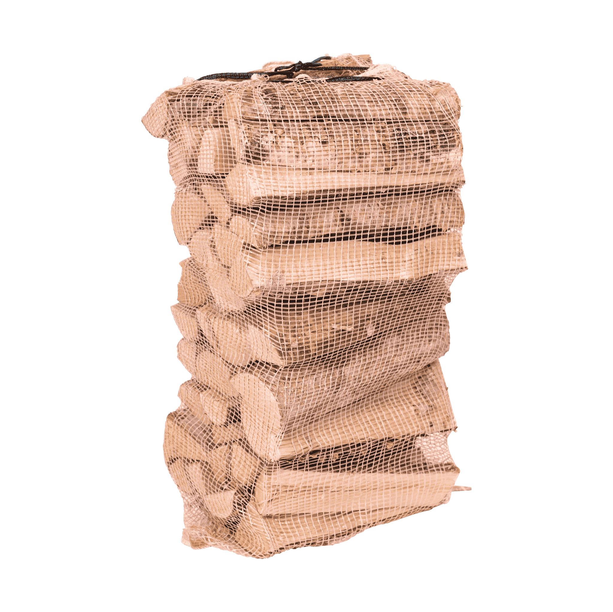
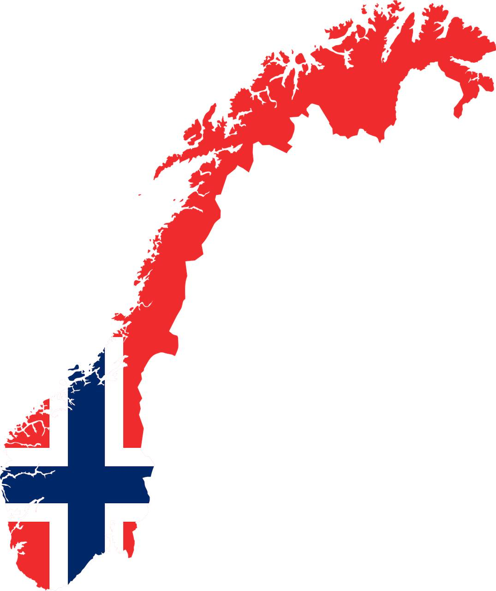
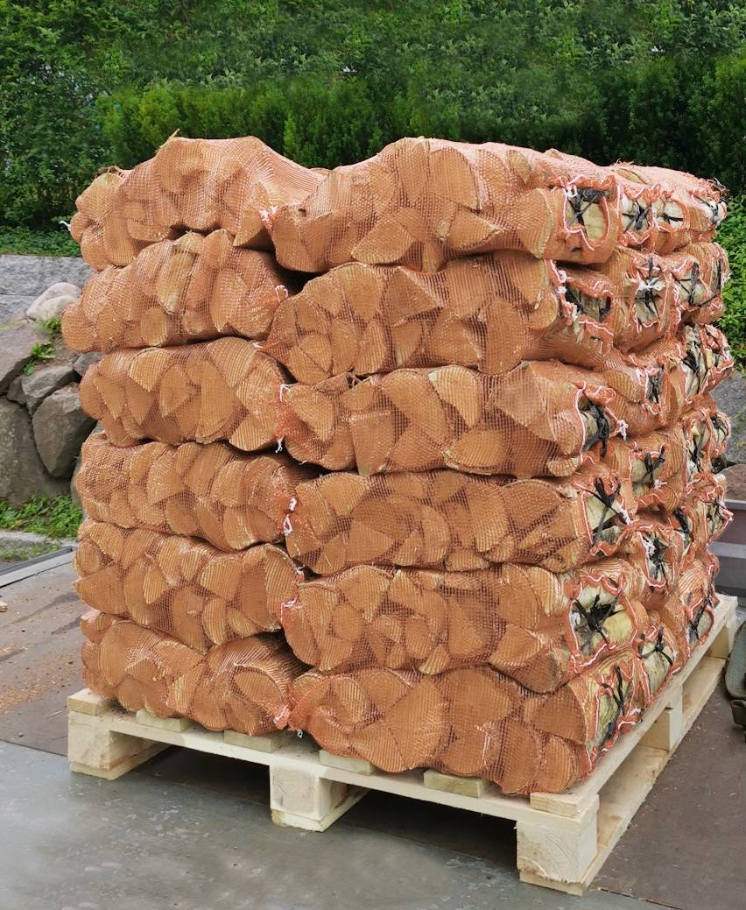

Produkter

40-liters bjørkeved
Lengden på veden er 26–28 cm og passer perfekt til alle standardovner.

Forutsigbar varme hjemme
Vår 40-liters vedsekk veier ca. 15 kg og gir rundt 64,5 kWh varme (15 kg × 4,3 kWh/kg).
Du får tørr bjørkeved som varmer raskt, gir god stemning og er klar når kulda kommer.
Med noen sekker på lager har du lun varme og ekstra beredskap dersom strømprisen svinger eller strømmen går.

"1000 liter storsekken"
1000 liter komprimert i 19 sekker à 40 liter (uten luft). Det er altså 19 stk 40 literssekker.